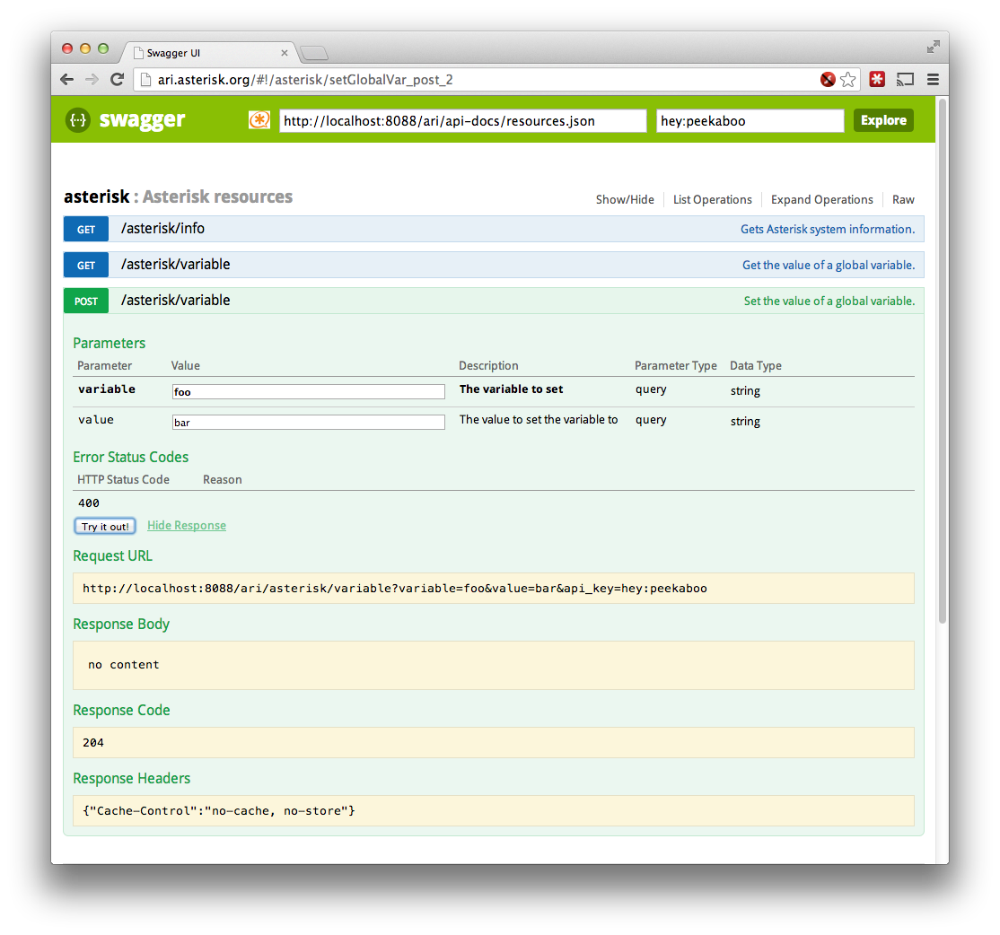

Asterisk 12 introduces the Asterisk REST Interface, a set of RESTful API's for building Asterisk based applications. This article will walk you though getting ARI up and running.
Before you begin, you will need to install Asterisk. This article also assumes that you are familiar with
You can find some historical documents on the wiki about the development and architecture of ARI.
- 1 Overview
- 2 Configuration
- 2.1 http.conf
- 2.2 ari.conf
- 2.3 extensions.conf
- 2.4 Phone configuration
- 3 Authenticating Requests
- 4 Using Swagger-UI
- 5 Connecting the WebSocket
- 6 Doing stuff
- 6.1 Manipulating the channel
- 6.2 Asynchronous operations
- 6.3 Bridging
- 7 Recommended Practices
- 8 WebSocket client libraries
Overview
There are three main components to building an ARI application.
The first, obviously, is the RESTful API itself. The API is documented using Swagger, a lightweight specification for documenting RESTful API's. The Swagger API docs are used to generated validations and boilerplate in Asterisk itself, along with static wiki documentation, and interactive documentation using Swagger-UI.
Then, Asterisk needs to send asynchronous events to the application (new channel, channel left a bridge, channel hung up, etc). This is done using a WebSocket on /ari/events. Events are sent as JSON messages, and are documented on the REST Data Models page. (See the list of subtypes for the Message data model.)
Finally, connecting the dialplan to your application is the Stasis() dialplan application. From within the dialplan, you can send a channel to Stasis(), specifying the name of the external application, along with optional arguments to pass along to the application.
Configuration
The sample configuration files, along with the config show help command, give full details of the Asterisk configuration files. Here's a sample set of file one might use to build a simple ARI application.
http.conf
In order to use ARI, Asterisk's HTTP server must be enabled. You should also consider the security of your interface when configuring the HTTP server.
[general]
enabled=yes
bindaddr=127.0.0.1 ; For applications to run on a different machine, use
; 0.0.0.0 or specify an address
;
; When running applications on a different machine, consider using TLS for
; your HTTP connections
;
;tlsenable=yes ; enable tls - default no.
;tlsbindaddr=0.0.0.0:8089 ; address and port to bind to - default is
; bindaddr and port 8089.
;tlscertfile=</path/to/certificate.pem> ; path to the certificate file
; (*.pem) only.
;tlsprivatekey=</path/to/private.pem> ; path to private key file
; (*.pem) only.
ari.conf
ARI itself is configured in the ari.conf file. For this example, we don't need pretty printing, so that's disabled.
We will be accessing the API from the Swagger-UI app hosted on ari.asterisk.org. The requires the allowed_origins option to be set, in order to access the API in a cross-origin sort of manner.
[general]
enabled=yes
;pretty=yes ; we don't need pretty-printing of the JSON responses in this
; example, but you might if you use curl a lot.
;
; In this example, we are going to use the version of Swagger-UI that is hosted
; at ari.asterisk.org. In order to get past CORS restrictions in the browser,
; That origin needs to be added to the allowed_origins list.
;
allowed_origins=ari.asterisk.org
[hey]
type=user
password=peekaboo
;read_only=no ; Set to yes for read-only applications
;
; For the security concious, you probably don't want to put plaintext passwords
; in the configuration file. ARI supports the use of crypt(3) for password
; storage. You can encrypt a password using the 'ari mkpasswd' command line
; command. Note that the protocols supported by crypt(3) are system specific,
; so check 'man 3 crypt' to see what's available on your system.
;
;password_format=crypt
;password=$6$u8RH5kQma8DV5$M0gydWzRGv/vuxtRXl306qpfi81Kr13F.QbqellcGARTFZ7GUWgERJ/OjD8cPAwItR/VMApo7bsHALqDPVnJX0
extensions.conf
If you would like to accept calls into your application, they need to be sent to the Stasis() application in the dialplan.
[default]
exten => 7000,1,Noop()
same => n,Stasis(hello,world) ; hello is the name of the application
; world is its argument list
same => n,Hangup()
Phone configuration
Configuring phones is outside the scope of this walk through. I recommend configuring a SIP smart phone, simply because it makes things easier when dealing with multiple calls.
Authenticating Requests
ARI requests (both the RESTful API and the WebSocket) must be authenticated. Two authentication schemes are support.
?api_keyquery parameter. This is the default method supported by Swagger-UI- The api_key is "username:password"
- HTTP Basic authentication
Using Swagger-UI
One of the advantages of documenting our RESTful API using Swagger is the ability to generate interactive documentation.
Swagger-UI is a pure HTML+JavaScript application which can download Swagger api-docs, and generate an interactive web page which allows you to view resources, their operations, and submit API requests directly from the documentation.
A fork of Swagger-UI is hosted on ari.asterisk.org, which enables DELETE operations (which are disabled by default in Swagger-UI), and sets the default URL to what it would be running Asterisk on your local system.
In order to access ARI, you have to populate the api_key field with a username:password configured in ari.conf. You should also set allowed_origins in ari.conf to allow the site hosting Swagger-UI to access ARI.

Connecting the WebSocket
When Asterisk is running, your application will need to connect to the WebSocket in order to receive events from Asterisk. There are several WebSocket client libraries available, covering most platforms and languages.
For this example, we will simply use the wscat.py script. This script requires the websocket-client library, so be sure to pip install websocket-client first.
$ wscat.py 'ws://localhost:8088/ari/events?app=hello&api_key=hey'
The WebSocket is now connected. As events are received, wscat will print them to stdout. Every recieved event will have:
type- text string naming the event. This is the model id from the/ari/api-docs/events.jsonAPI doc.application- The name of the application receiving the event. In our example, the name ishello.timestamp- Time of the event. Most events have a timestamp field, but not all.
Doing stuff
Okay, first try something simple. Let's just dial the application. Use whatever telephony device you've configured with Asterisk to dial extension 7000. You should see this message come from the WebSocket:
{
"application": "hello",
"args": [
"world"
],
"channel": {
"accountcode": "",
"caller": {
"name": "blink",
"number": "blink"
},
"connected": {
"name": "",
"number": ""
},
"creationtime": "2013-10-15T15:54:12.625-0500",
"dialplan": {
"context": "default",
"exten": "7000",
"priority": 2
},
"id": "1381870452.0",
"name": "SIP/blink-00000000",
"state": "Ring"
},
"timestamp": "2013-10-15T15:54:12.626-0500",
"type": "StasisStart"
}
The StasisStart event shows that a channel has entered into the Stasis dialplan application. This application is hello, and the arguments passed to the application are ["world"]. You also recieve a channel object with detailed information about the channel. The channel's id field is how the channel is identified via the REST API.
Manipulating the channel
There are lots of things you can do with channels.
$ CHAN=1381870452.0 $ curl -v -u hey:peekaboo -X POST "http://localhost:8088/ari/channels/$CHAN/answer" # <snip/> < HTTP/1.1 204 No Content < Server: Asterisk/SVN-dlee-playback-events-hack-URL:-r400821M < Date: Tue, 15 Oct 2013 21:10:33 GMT < Connection: close < Cache-Control: no-cache, no-store < Content-Length: 0 < * Closing connection #0
The /answer operation simply returns 204 No Content to indicate success. You will also see a ChannelStateChange message on the WebSocket, indicating that the channel is now "state": "Up". If you press DTMF keys on the phone, you will also see ChannelDtmfReceived events on the WebSocket.
Asynchronous operations
Most operations you perform via ARI are asynchronous. This means that the API call returns immediately, and work is queued up to happen in the background. For some operations (like /answer) this is fairly transparent. For others (like /play and /record), this is apparent in the API.
Let's look at how playback works.
$ curl -v -u hey:peekaboo -X POST "http://localhost:8088/ari/channels/$CHAN/play?media=sound:hello-world" | jsonpp
# <snip/>
< HTTP/1.1 201 Created
< Server: Asterisk/SVN-dlee-playback-events-hack-URL:-r400821M
< Date: Tue, 15 Oct 2013 21:14:56 GMT
< Connection: close
< Cache-Control: no-cache, no-store
< Content-Length: 146
< Location: /playback/9315bf40-ac65-4cbe-83ae-b4e4355f585e
< Content-type: application/json
<
{ [data not shown]
100 146 100 146 0 0 34515 0 --:--:-- --:--:-- --:--:-- 142k
* Closing connection #0
{
"id": "9315bf40-ac65-4cbe-83ae-b4e4355f585e",
"media_uri": "sound:hello-world",
"target_uri": "channel:1381871629.2",
"language": "en",
"state": "queued"
}
POST'ing to the /play resource returns a 201 Created, because it creates a /playback resource. The URI is given in the Location: header, and the id is given in the response.
We're now done with the channel. We can hangup with an HTTP DELETE
$ curl -v -u hey:peekaboo -X DELETE "http://localhost:8088/ari/channels/$CHAN" # <snip/> < HTTP/1.1 204 No Content < Server: Asterisk/SVN-dlee-playback-events-hack-URL:-r400821M < Date: Tue, 15 Oct 2013 21:23:12 GMT < Connection: close < Cache-Control: no-cache, no-store < Content-Length: 0
Once again, since there's nothing more to say than 'success', the response is 204 No Content.
Bridging
One of the more powerful features in ARI is the ability to create your own bridges, and move channels into and out of those bridges. Let's see some of that now. First, we'll create a holding bridge. This is a bridge which plays music on hold to all participants, and they cannot hear one another.
$ curl -v -u hey:peekaboo -X POST "http://localhost:8088/ari/bridges?type=holding"
{
"channels": [],
"id": "5b55d1f0-2edf-4b94-a07c-d841e25bba1e",
"technology": "holding_bridge",
"bridge_class": "base",
"bridge_type": "holding"
}
$ BRIDGE="5b55d1f0-2edf-4b94-a07c-d841e25bba1e"
There you go, a brand new bridge with no channels in it. If you issue a GET on /bridges, or /bridges/$BRIDGE, you can see the details of the bridge, including the ids of all the channels currently in the bridge.
Now dial the 7000 extension a couple of times to get a few channels.
{
"application": "hello",
"args": [
"world"
],
"channel": {
"accountcode": "",
"caller": {
"name": "blink",
"number": "blink"
},
"connected": {
"name": "",
"number": ""
},
"creationtime": "2013-10-15T16:42:28.808-0500",
"dialplan": {
"context": "default",
"exten": "7000",
"priority": 2
},
"id": "1381873348.4",
"name": "SIP/blink-00000004",
"state": "Ring"
},
"timestamp": "2013-10-15T16:42:28.809-0500",
"type": "StasisStart"
}
{
"application": "hello",
"args": [
"world"
],
"channel": {
"accountcode": "",
"caller": {
"name": "blink",
"number": "blink"
},
"connected": {
"name": "",
"number": ""
},
"creationtime": "2013-10-15T16:42:40.572-0500",
"dialplan": {
"context": "default",
"exten": "7000",
"priority": 2
},
"id": "1381873360.5",
"name": "SIP/blink-00000005",
"state": "Ring"
},
"timestamp": "2013-10-15T16:42:40.573-0500",
"type": "StasisStart"
}
Answer the channels, and add them to the bridge
$ CHAN1=1381873348.4 $ CHAN2=1381873360.5 $ curl -u hey:peekaboo -X POST "http://localhost:8088/ari/channels/$CHAN1/answer" $ curl -u hey:peekaboo -X POST "http://localhost:8088/ari/channels/$CHAN2/answer" $ curl -v -u hey:peekaboo -X POST "http://localhost:8088/ari/bridges/$BRIDGE/addChannel?channel=$CHAN1,$CHAN2" # <snip/> < HTTP/1.1 204 No Content
You should now hear music-on-hold on each channel. Even while in the bridge, you can play media to the channels. Media may be played individually, or to the entire bridge. The music-on-hold will resume when the playback has ended.
# Play to the channels individually $ curl -s -u hey:peekaboo -X POST "http://localhost:8088/ari/channels/$CHAN1/play?media=sound:hello-world" $ curl -s -u hey:peekaboo -X POST "http://localhost:8088/ari/channels/$CHAN2/play?media=sound:hello-world" # Play to the bridge $ curl -s -u hey:peekaboo -X POST "http://localhost:8088/ari/bridges/$BRIDGE/play?media=sound:hello-world"
Recommended Practices
Don't access ARI directly from a web page
It's very convenient to use ARI directly from a web page for development, such as using Swagger-UI, or even abusing the WebSocket echo demo to get at the ARI WebSocket.
But, please, do not do this in your production applications. This would be akin to accessing your database directly from a web page. You need to hide Asterisk behind your own application server, where you can handle security, logging, multi-tenancy and other concerns that really don't belong in a communications engine.
Use an abstraction layer
One of the beautiful things about ARI is that it's so easy to just bang out a request. But what's good for development isn't necessarily what's good for production.
Please don't spread lots of direct HTTP calls throughout your application. There are cross-cutting concerns with accessing the API that you'll want to deal with in a central location. Today, the only concern is authentication. But as the API evolves, other concerns (such as versioning) will also be important.
Note that the abstraction layer doesn't (and shouldn't) be complicated. Your client side API can even be something as simple wrapper around GET, POST and DELETE that addresses the cross-cutting concerns. The Asterisk TestSuite has a very simple abstraction library that can be used like this:
ari = ARI('localhost', ('username', 'password'))
# Hang up all channels
channels = ari.get('channels')
for channel in channels:
ari.delete('channels', channel['id'])
Higher level abstractions would also be good, but require a more complicated client library. ARI is still very new, but these are coming along.
WebSocket client libraries
- Python
- Java
- Ruby
- JavaScript
- ws (includes a wscat implementation)
- Perl
{kind=link}